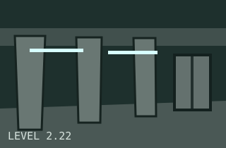
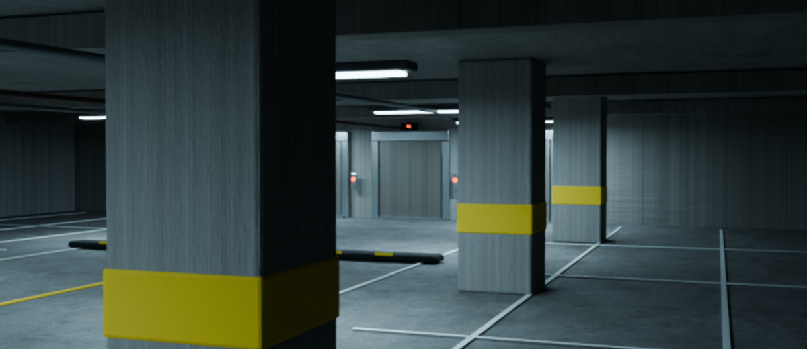
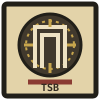

Environment dossier index
Browse numbered spaces, sublevels and unstable locations currently held by the registry desk.
Field dossiers concerning spaces that should not exist.
Featured dossier // active investigation
An empty multi-floor parking structure whose age, floor count, elevator systems, ramps and exterior routes refuse to remain fixed. The building appears to revise itself between visits.
The current dossier includes field observations, recurring configurations, hazard reports, access routes and twenty-two recovered visual records.
Unseal case fileInspect dossier index
Recovered frame 2.22-A // location unverifiedThe Bureau registry currently begins with a single active case file: Level 2.22.
Rendered field frames document recurring configurations without establishing a reliable route.
No ordinary entities have been documented. The structure itself remains the primary concern.

Browse numbered spaces, sublevels and unstable locations currently held by the registry desk.
Inspect Unity Engine environment projects built so visitors can walk through and explore archived levels.

Read the purpose of this archive and the filing procedure for future original environments.